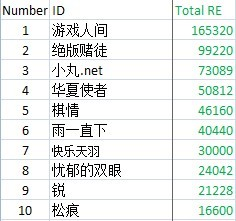

第十二届五子棋世锦赛竞猜金币数据大公布
#1 第十二届五子棋世锦赛竞猜金币数据大公布 作者：踵酃 发表时间：2011-8-13 6:23:57
在第十二届五子棋世锦赛期间IWZQ论坛启动了竞猜金币功能活动，促使了论坛金币活跃。
所谓的竞猜金币，必然有人输，有人赢，有人喜，有人悲。 这里说句通俗的话；小赌怡情，大赌乱性。
A. 四大数据前十名排行榜。
1. 总共投注金币最多前十排行榜。
2. 总共赚回最多金币前十排行榜。

3. 总共赚取纯金币前十排行榜。
4. 总共损失最多金币前十排行榜。

B. 个人特别记录
1. 单轮投注最多金币记录： 绝版赌徒 以单轮投注 45000 金 保持记录。
2. 单轮赚取最多金币记录： 绝版赌徒 以单轮赚取 95220 金 保持记录。
3. 单轮损失最多金币记录： 失落刀 以单轮损失 30000 金 保持记录。
4. 总公参与最多轮次记录： 掌棋如烟 以总共参与 11 轮 保持记录。
C. 其他数据公布
1. 总共参与竞猜 有127 名ID
2. 其中有赚的 有 59 名ID
3. 其中破财的 有 68 名ID
注：此数序并非官方发布，乃是笔者是爱好排行榜者，为了方便大家研究分析竞猜走势而编辑。
以上数据属于竞猜公开信息，并不涉及任何隐私。所提供之数据并没有经过多番检验，故暂定错误率0.1%，再次提醒此数据仅供参考。
（信不信由你，反正我信了）
#2 Re:第十二届五子棋世锦赛竞猜金币数据大公布 作者：有志青年 发表时间：2011-8-13 6:25:40
不少人一夜回到了解放前#3 Re:第十二届五子棋世锦赛竞猜金币数据大公布 作者：踵酃 发表时间：2011-8-13 6:59:49
 其实论坛控制金币发放本来就很严格，存款10W以上的ID 不知道现在有没有了。
其实论坛控制金币发放本来就很严格，存款10W以上的ID 不知道现在有没有了。
根据数据显示，全部投注竞猜金币大概87W金币。
#4 Re:第十二届五子棋世锦赛竞猜金币数据大公布 作者：小丸.net 发表时间：2011-8-13 7:22:59
牛B，比我的数据还准确。。。。。
#5 Re:第十二届五子棋世锦赛竞猜金币数据大公布 作者：掌棋如烟 发表时间：2011-8-13 8:05:08
 总公参与最多轮次记录： 掌棋如烟 以总共参与 11 轮 保持记录。
总公参与最多轮次记录： 掌棋如烟 以总共参与 11 轮 保持记录。
有木有参与奖挖!!!!!!!!!!!??????????
#6 Re:第十二届五子棋世锦赛竞猜金币数据大公布 作者：松痕 发表时间：2011-8-14 21:31:52
还是蛮难计算的
［此帖子已被 松痕 在 2011-8-14 21:37:25 编辑过］
#7 Re:第十二届五子棋世锦赛竞猜金币数据大公布 作者：忧郁的双眼 发表时间：2011-8-14 21:35:35
我哭啊 心拔凉拔凉的~#8 Re:第十二届五子棋世锦赛竞猜金币数据大公布 作者：傀儡 发表时间：2011-8-14 21:41:28
 俺属于小破财行列的（没多少财可破，但也败光了）
俺属于小破财行列的（没多少财可破，但也败光了）
#9 Re:第十二届五子棋世锦赛竞猜金币数据大公布 作者：忧郁的双眼 发表时间：2011-8-14 21:42:00
失落刀跟26是一个人，哇，你惨了，输那么多，难怪后面都只投一注。。。#10 Re:第十二届五子棋世锦赛竞猜金币数据大公布 作者：五连达人 发表时间：2011-8-14 22:46:15

#11 Re:第十二届五子棋世锦赛竞猜金币数据大公布 作者：逆刃 发表时间：2011-8-14 22:49:20
这数据是怎么统计的？#12 Re:第十二届五子棋世锦赛竞猜金币数据大公布 作者：自来水 发表时间：2011-8-14 22:57:15
全贴普查...
#13 Re:第十二届五子棋世锦赛竞猜金币数据大公布 作者：踵酃 发表时间：2011-8-14 23:10:05
非常的简单。
把13轮总共公布的夺奖信息全部输入microsoft excel。
基本上以每轮的总投注数金币， 每轮的总赚取数金币，以及最后的总纯赚取数（总赚取数-总投注数=总纯赚取数）
输入完后，以及设定好formula 后，就可以运用查看功能随便翻看。
［ 逆刃 于 2011-8-14 23:30:25 时花20金币送鲜花一朵］
［ 蓝天蓝 于 2011-8-14 23:36:10 时花20金币送鲜花一朵］